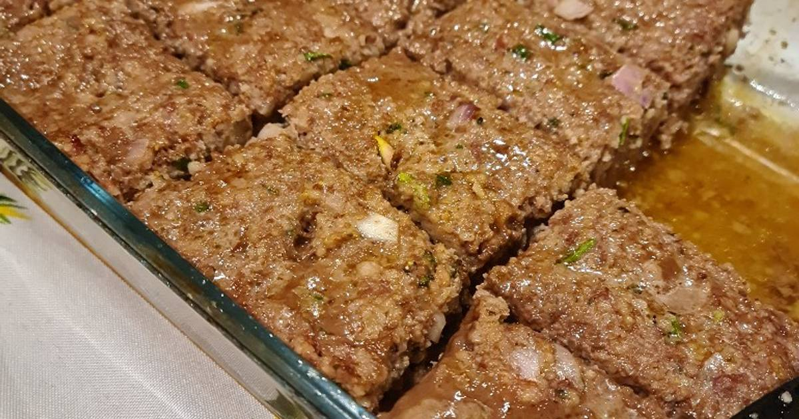

Keppe: A slab of heaven

Ingredients
- Bulgur wheat, 250 grams
- Ground meat, 250 grams. Alternatively, 100 grams of Soya Chunks.
- Two large onions, any kind.
- One to Three lemons, up to cook's taste.
- Some sprigs of fresh parsley, as many as needed.
- 2 garlic cloves, or 1 tablespoon of garlic powder.
- A mixture of, ideally, all of the following: paprika, powdered/grated ginger, ground black pepper, salt,
oregano, cumin and nutmeg (Spices listed in order of the amount of each in mixture).
- Water, 250 mililiters. If soya chunks are used instead of ground meat, make it ~400 mililiters instead. Beef
broth can be used instead of water for the soya chunks.
- Vegetable oil. Ideally, olive oil.
- Optionally, one tomato and one/half of a red bell pepper.
Steps
- Boil the water, and the beef broth if you are using it. In the meantime chop all vegetables and put them on
a bowl big enough to allow kneading it's contents. Pour some oil andthe juice of the lemons over the
vegetables, add the spice mixture as well.
- When the water is ready, pour it on the wheat. If you are using soya chunks instead of ground meat, pour 250
ml on the wheat and the rest on the soya chunks. Pour the beef broth on the soya chunks instead, in case you
chose to use it. Let them rest until they are cool enough for you to squeeze the water out of the grains
without burning your hand.
- Once the wheat is cool enough, squeeze the water out of the wheat and/or soya chunks. Once that is done, mix
the wheat and the ground meat, or the wheat and the soya chunks, with the vegetables in the bowl. Knead
until all ingredients are thoroughly integrated, then let it rest for at least an hour.
- After an hour has passed, put the mixture in an oven tray and cook the keppe in the oven on medium heat for
40 minutes to an hour. Retire from oven and serve while hot.
Go back Home